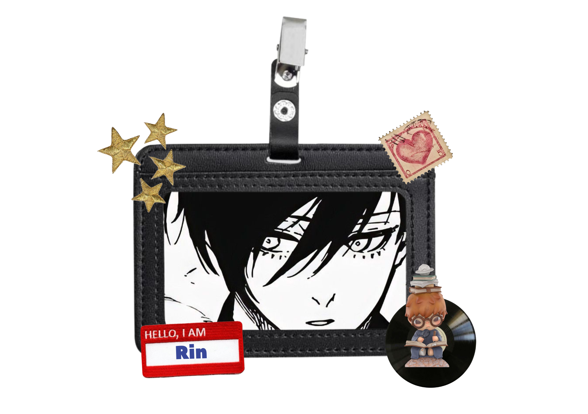

Character Name: Itoshi Rin
Itoshi Rin is a character from the anime and manga series "Blue Lock". He is known for his exceptional football skills and his intense rivalry with other players.
- 🕷 Name: Itoshi Rin
- 🏙 From: Japan
- 💥 Hobby: Soccer
The reason why I like Itoshi Rin is because of his determination and passion for soccer. His character development through the series is inspiring, and he showcases the importance of hard work and perseverance in achieving one's goals.